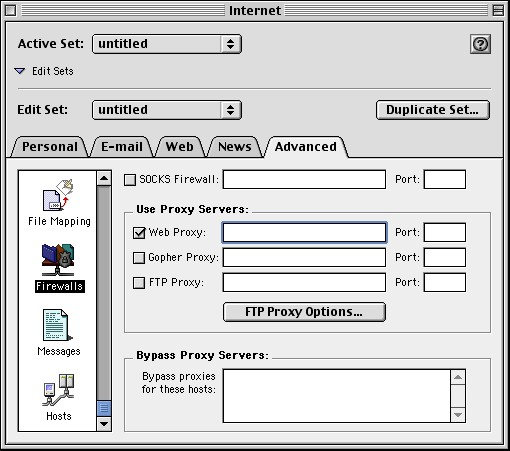

Not Recommended Document
Important: The information in this document is Not Recommended and should not be used for new development.
Current information on this Reference Library topic can be found here:
ADC Home > Reference Library > Technical Q&As > Networking > Carbon >
Important: The information in this document is Not Recommended and should not be used for new development.
Current information on this Reference Library topic can be found here:
|
|
Q: How do I use URL Access in combination with a proxy server? A: To use URL Access with proxy servers, nothing in your source code needs to change. URL Access uses the Internet Config APIs on both Mac OS 9 and Mac OS X in order to determine your proxy server settings. All you need to do is specify your proxy server address and port number. When running on Mac OS 9, you can set this programmatically by using the Internet Config APIs or manually by using the Internet control panel. Just launch the control panel and select the 'Advanced' tab and then scroll down to the 'Firewalls' section. If your Internet control panel doesn't have an 'Advanced' tab, simply select the 'User Mode' menu item located in the 'Edit' menu and then choose 'Advanced'.

Alternatively, you can configure your proxy server settings using the Network panel inside the System Preferences application. First, select the device that you need to use the proxy server with (most likely Built-in Ethernet), and then click the 'Proxies' tab. Just enter your proxy server address in the 'Web Proxy' field and you're all set.
[Oct 02 2001] |
|